A placa de vídeo
De 1985 a 2007, em ordem e com as pessoas. O processador parou perto de 3 GHz; ir mais rápido virou fazer muitas contas ao mesmo tempo. Que peça já fazia isso há dez anos? A placa de vídeo, pra jogo. Pintar uma tela é fazer a mesma conta em 307 mil pontos, trinta vezes por segundo. Quando o áudio pedir, aperte Próximo.
A equipe de pintores. A tela é uma parede de 300 mil azulejos repintada trinta vezes por segundo. O processador é um pintor só, esperto, um azulejo por vez. A placa de vídeo é uma equipe de centenas de pintores simples, todos com a mesma instrução, pintando ao mesmo tempo.
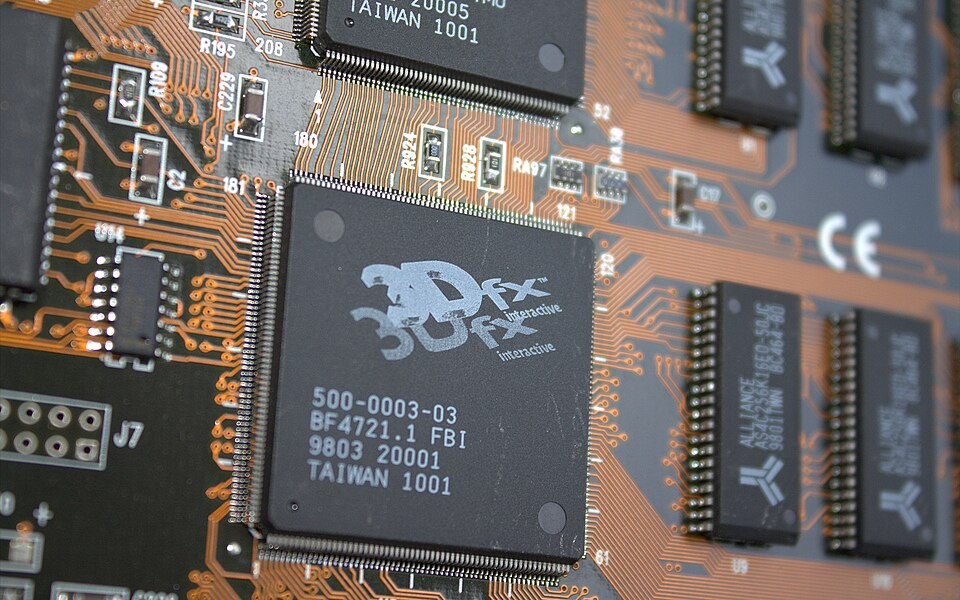
A placa burra
Em 1993 o software já queria 3D; o hardware que sabia fazer isso custava dezenas de milhares de dólares.
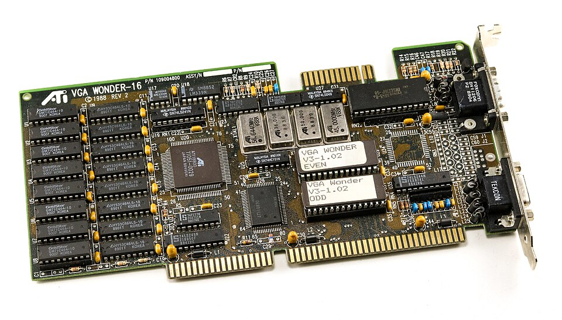
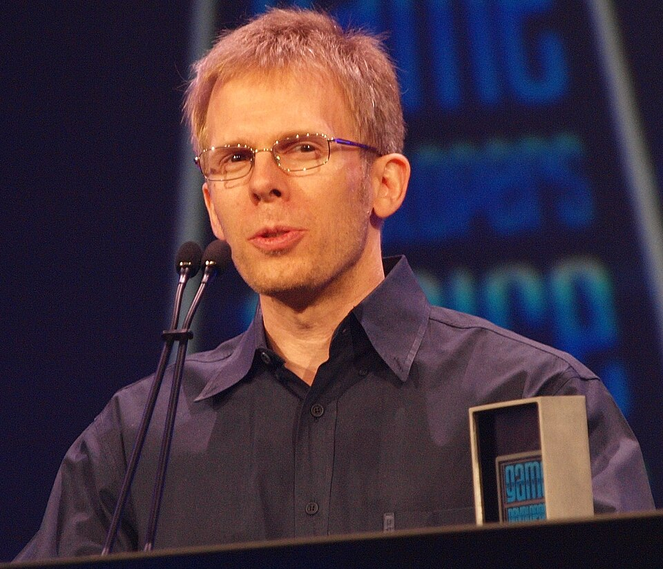
A NVIDIA erra a língua
O hardware pode ser bom e morrer se não falar a língua que o software escolheu. A lição do Itanium, dez anos antes.
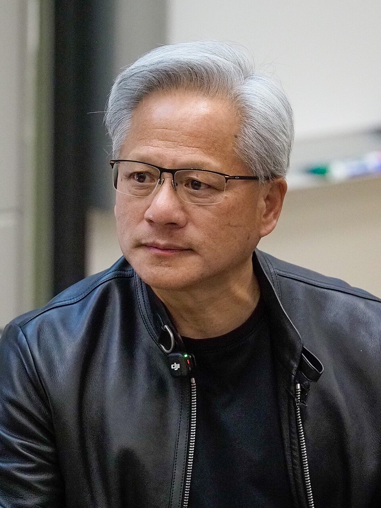
A placa que só sabia fazer 3D
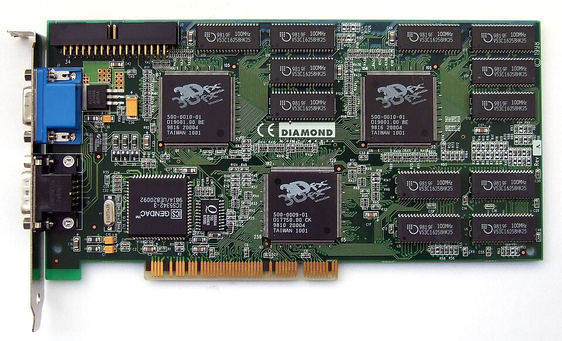
Três engenheiros vindos da Silicon Graphics fundam a 3dfx. O Voodoo Graphics (out/nov 1996) só faz 3D: liga em cascata na placa normal e assume a tela quando o jogo começa. Em 22 de janeiro de 1997 Carmack solta o GLQuake, o Quake pintado pela placa. A placa vira obrigatória.
Glide contra Direct3D
Pela quarta vez na série, ganhou quem exigiu menos do software: a peça que fala a língua comum sobrevive.
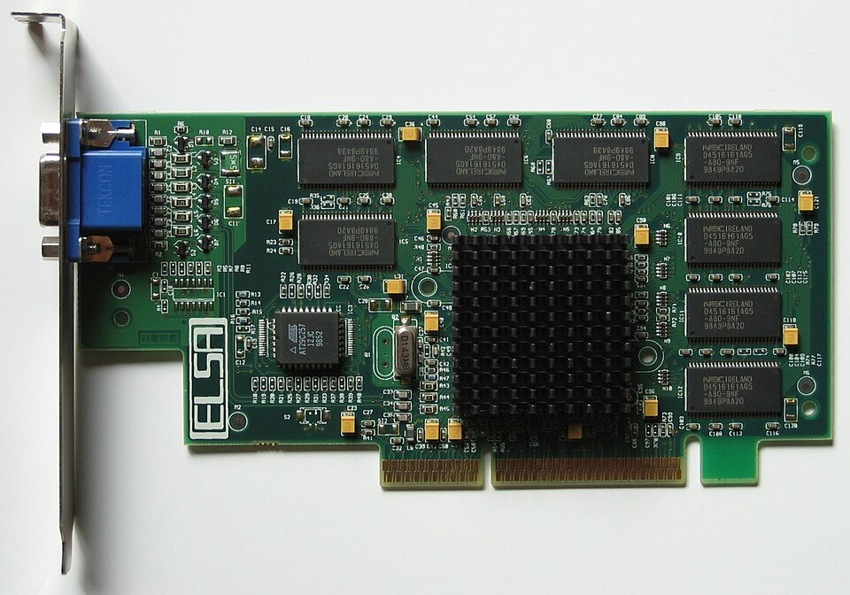
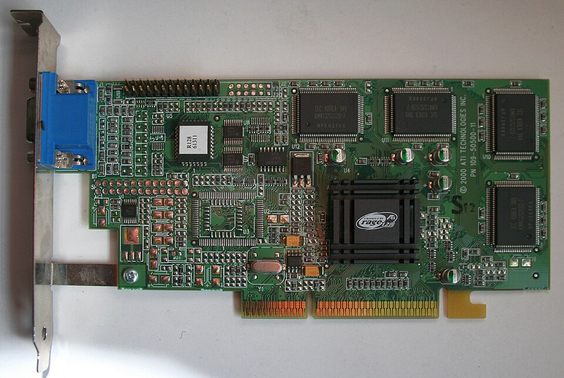
A primeira GPU
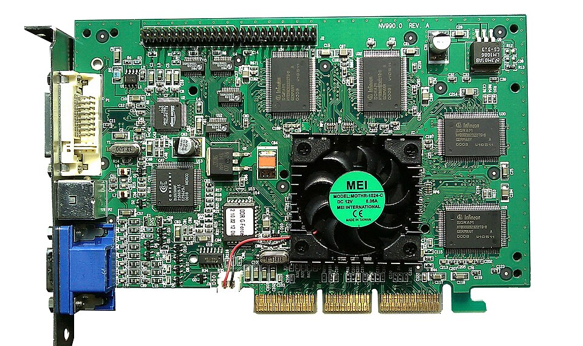
Mesmo com Voodoo ou RIVA, o processador ainda calculava onde cada triângulo cai na tela e como a luz bate nele. Em 31 de agosto de 1999 a NVIDIA anuncia a GeForce 256: geometria e luz vão pra placa. Uns 20 milhões de transistores, o dobro do Pentium III. Nome novo: GPU.
A placa aceita programa
A peça nasceu especializada pra ser rápida e agora ganha de volta um pouco de generalidade. Cada pintor passa a seguir um programinha. Isso vai ser a porta.
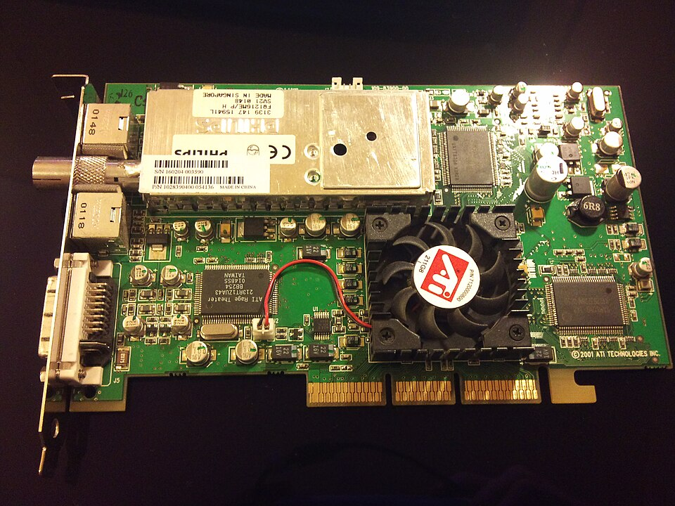
Centenas de pintores iguais

O processador é um caixa só, esperto. A placa é o oposto: centenas de pintores simples, todos com a mesma instrução em números diferentes. Em 2004 um doutorando de Stanford apresenta o Brook: a conta em C, direto pra placa.
A AMD compra a ATI
Dois núcleos e centenas de pintores são dois jeitos de fazer muitas contas ao mesmo tempo. Em 2006 a indústria decide que os dois vão viver juntos.
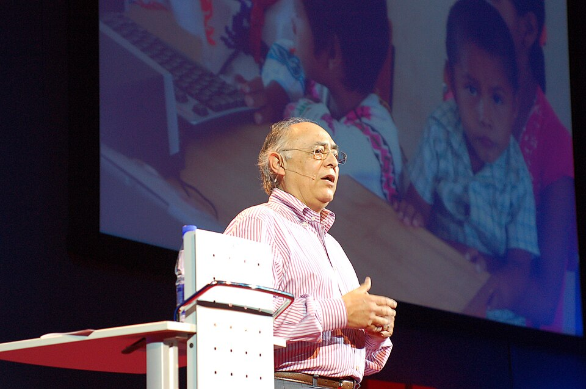
A GeForce 8800
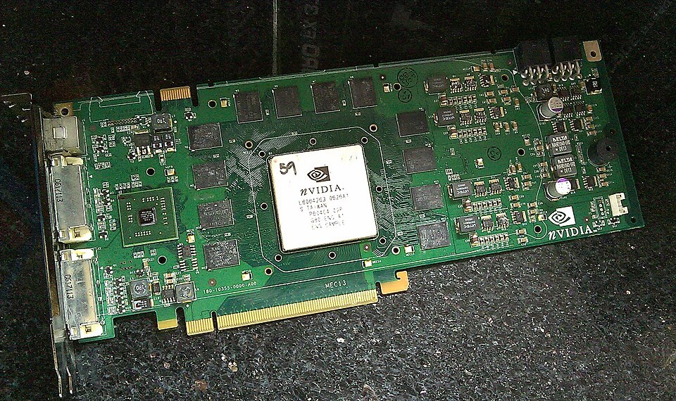
681 milhões de transistores, o dobro do Core 2 Duo. Até ali a placa tinha pintores especializados: uns pra geometria, outros pra cor. A 8800 tem 128 processadores iguais, que fazem as duas coisas. Um computador de pintores iguais, que por acaso ainda pinta jogo.
CUDA: a língua que abriu a placa
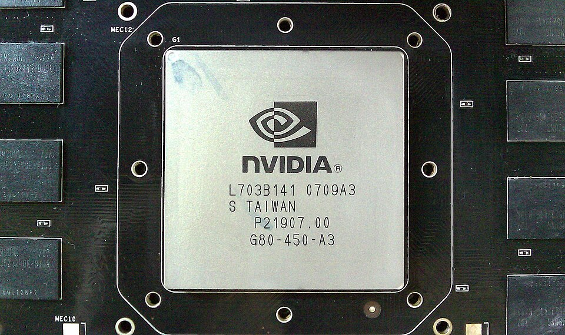
Um programa em C que roda direto nos 128 processadores da placa, sem fingir que é jogo: "faça esta conta em cada um destes um milhão de números", e a placa distribui pelos pintores. Liderado pelo doutorando do Brook, com Kirk empurrando. Primeiros usos: física, química, finanças.
2007
Existe algum problema que a gente não sabe escrever como programa, mas que dá pra resolver só com muita conta repetida? E se a resposta estivesse guardada numa gaveta desde 1958?